Historical and reference coats of arms


New York
Guide. Places in this edition: 40.
OTIUM is the practice of deliberate leisure. In the classical sense, otium is not escape from work but time when attention returns to memory, landscape, and thought — without a utilitarian deadline.
We shape routes for lingering, not for checklist tourism. The goal is presence in a place rather than consumption of sights.
OTIUM is not a tour operator. It is an invitation to walk, pause, and leave a route unfinished if the light on a façade deserves another minute.
Historical and reference coats of arms
Guide. Places in this edition: 40.
Upper West Side
Blue whale, dinosaurs, and the Hayden Planetarium complex draw families and researchers. Linked to Columbia and scientific expeditions since the Gilded Age. Filming location for a famous overnight children's story.
Started from suppressed Victorian cabinets of curiosity into a global natural-history powerhouse. Defines the park-facing museum row on the Upper West Side.

Central Park

The Angel of the Waters crowns the fountain; the lower passage's tiles are a favorite acoustic stop. Calvert Vaux and Jacob Wrey Mould shaped much of the ornament. Central Park's intellectual heart between the Mall and the Lake.
Planned as a scenic pause in Olmsted and Vaux's greensward; restored in the late 20th century. One of the most filmed and photographed gathering places in the park.
East River
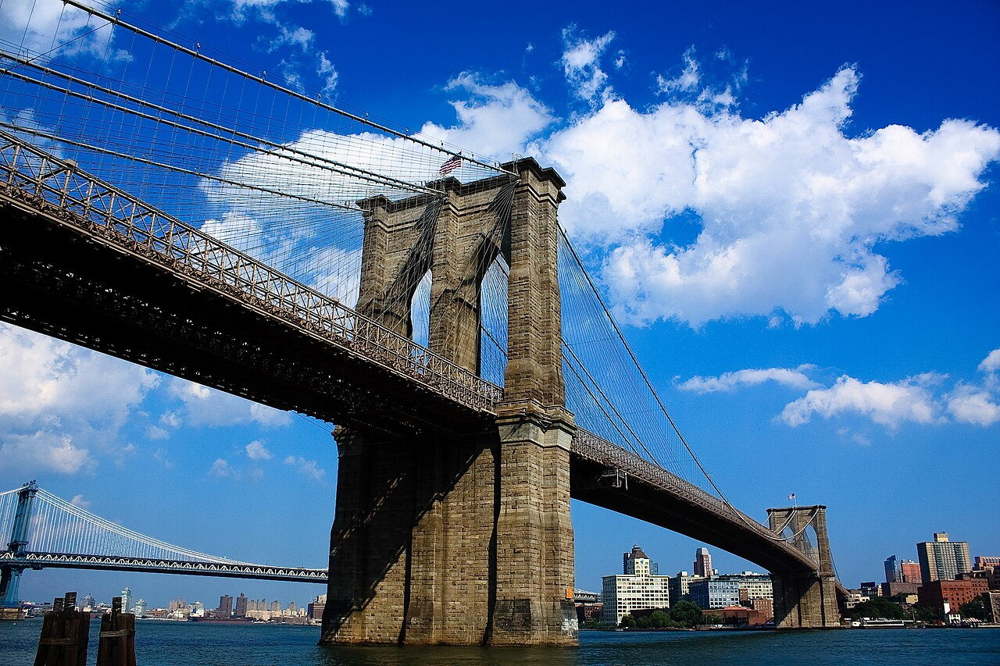
Pedestrians, cyclists, and vehicles share the deck; the elevated promenade is a classic skyline walk. John A. Among the first major suspension bridges using steel cables.
A long, dangerous construction story beneath river caissons; opened as a symbol of unified New York. Defines the silhouette of Lower Manhattan and Dumbo; still a working artery.
Grand Army Plaza
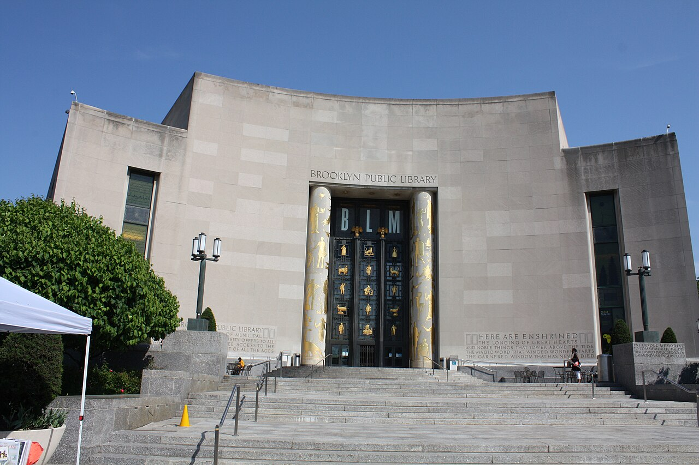
Grand lobby inscribed with gold authors; massive reading room beneath the facade's clock. Main borough lender for Brooklyn's independent library system. Facades mix literary references with streamlined Deco geometry.
Depression-era WPA optimism cast as a palace for the people facing Prospect Park. Counterweight to Manhattan's NYPL in borough cultural identity.
Morningside Heights
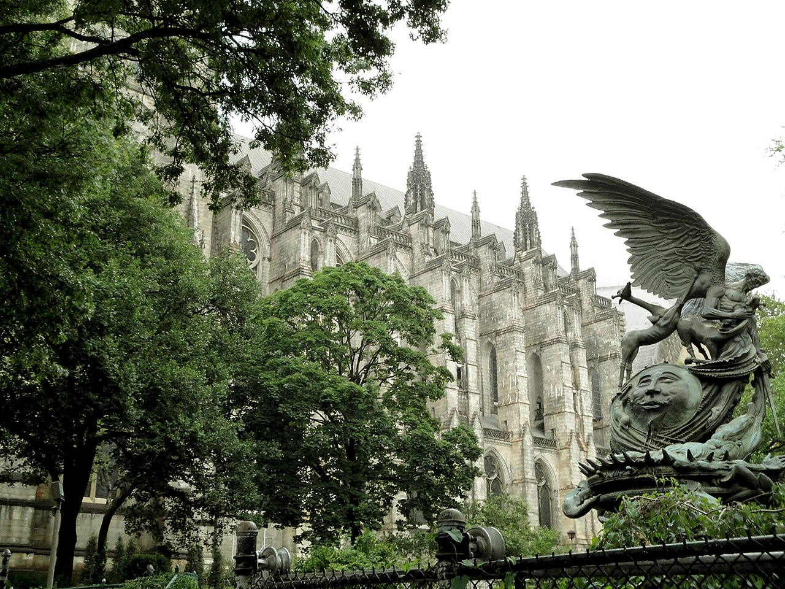
One of the world's largest churches; peacocks once roamed the close; fire and fundraising interrupt completion. Nicknamed St. Hosts contemporary art installations and civic gatherings inside the vast shell.
Intended as cathedral for the Diocese of New York with ecumenical programming. Literal and figurative monument to aspirational ecclesiastical scale.
Bowling Green / Financial District
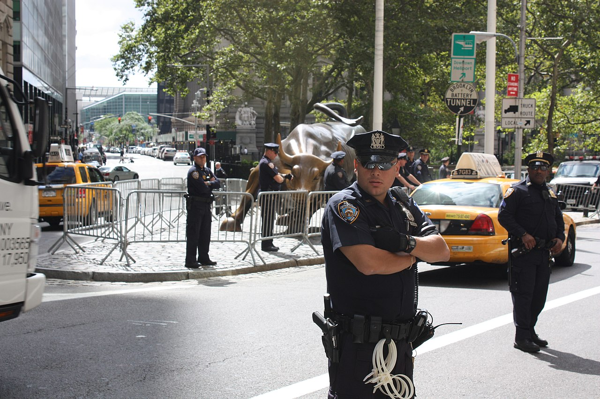
Three-ton bull became a selfie magnet and symbol of aggressive markets. Dropped guerrilla-style as post-crash morale piece. Fearless Girl briefly faced it, spurring copyright and placement debates.
Wandered from Wall Street to Bowling Green as crowds and tourism grew. Unofficial mascot of American finance despite tangled ownership questions.
Art Deco skyscraper
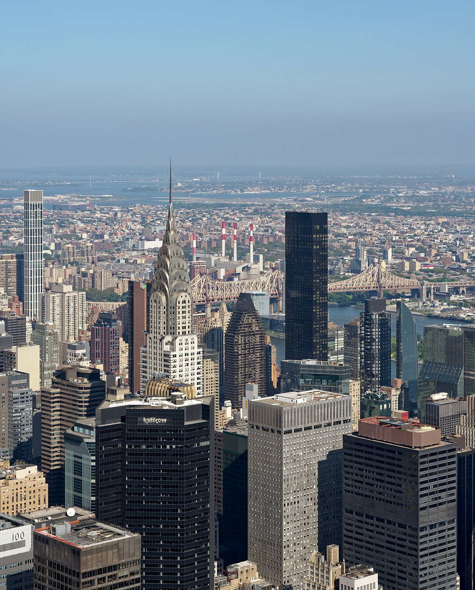
Stainless-steel sunburst crown and gargoyles reference automotive motifs and machine age glamor. Briefly tallest in the world before the Chrysler crown was overtaken nearby. Lobby murals and elevators are carefully restored Deco interiors.
Walter Chrysler commissioned a corporate headquarters as a race for height raged. Often ranked among the most beautiful skyscrapers in the country.
Brooklyn
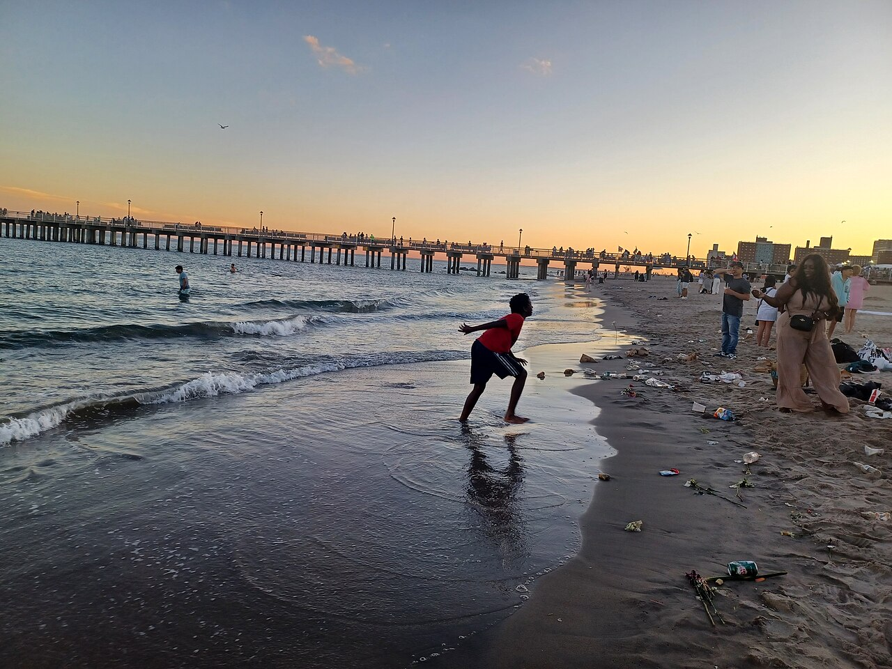
Wonder Wheel, Luna Park, and Nathan's frame a working-class beach culture. Early electric illuminations made it America's playground. Hurricanes and fires repeatedly reshaped the landscape.
Streetcar suburbs met freak shows, roller coasters, and immigrant leisure. Archetype of American seaside kitsch and Brooklyn identity.
Brooklyn waterfront
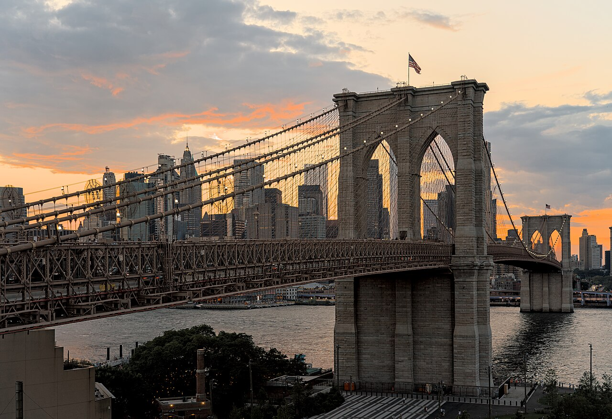
Washington Street's bridge-down-the-canyon shot is mandatory; Empire Fulton Ferry Park adds lawns. Down Under the Manhattan Bridge Overpass names the micro-neighborhood. Jane Jacobs and activists slowed a megablock highway plan in favor of reuse.
Cargo ferries declined; artists colonized cheap factory floors before boutiques arrived. Single most reproduced postcard angle of New York bridges.
Upper New York Bay

Great Registry Room and exhibits trace inspection, medical lines, and family stories. Processed roughly twelve million immigrants 1892–1954. Part of Statue of Liberty National Monument with linked ferry access.
Replaced earlier wooden structures after fire; restoration turned ruin into museum in 1990s. Central archive of American arrival narratives and genealogy.
Midtown Manhattan
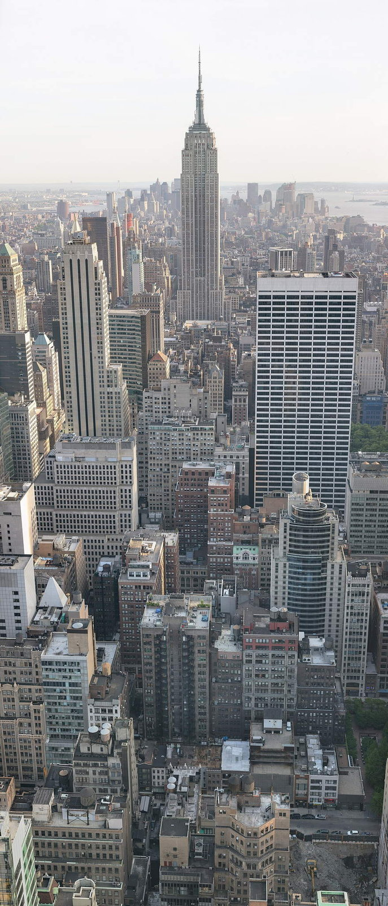
Observatories on the 86th and 102nd floors draw millions; the mast once envisioned airship docking. Rose rapidly during the Depression; briefly the world's tallest. Lighting schemes mark holidays and civic events.
Built on the site of the old Waldorf-Astoria as speculative office space turned architectural fame. Global shorthand for New York ambition and film-set romance.
Wall Street
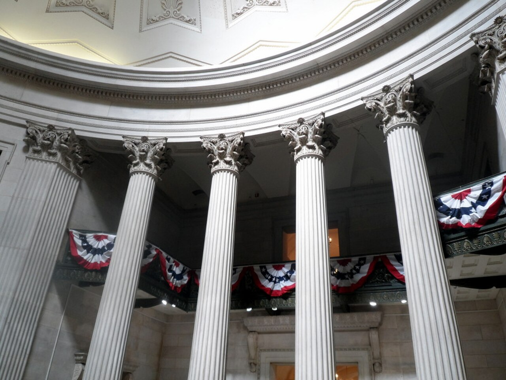
Washington's first inaugural balcony is remembered; National Memorial exhibits civic history. Earlier structures hosted the first Congress and Washington's oath. Free museum run by the National Park Service.
Remodeling erased much of the 18th-century fabric but the myth of origins endures. Ground zero of American federal government under the Constitution.
Fifth Avenue at Broadway

The acute triangular plan follows the diagonal Broadway grid against the Manhattan grid. Fuller Building by another name; early skyscraper publicity photography favorite. Windy at the narrow prow; legends of updrafts became part of city lore.
Among the tallest when new; stood for confident commercial architecture uptown from Wall Street. Quintessential wedge building in guidebooks and pop culture.
Midtown Manhattan

The Main Concourse sky ceiling and Tennessee marble are civic theater for commuters. Saved from demolition by landmark campaign and judicial fight, 1970s. Whispering galleries play tricks along the Guastavino tile vaults by the Oyster Bar.
Replaced an earlier station; electrification and urban design made it a model hub. Interior landmark and working terminus for Metro-North.
Elevated park
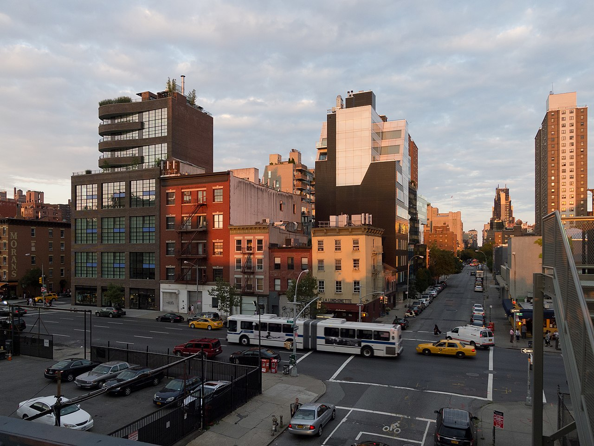
Native plantings, art installations, and peek views of the Hudson and street life. Friends of the High Line advocated saving the abandoned structure. Spurred similar elevated-park ideas in other cities.
West Side freight line fell quiet; threatened demolition became a design competition and civic project. Model of post-industrial greenspace amid dense Chelsea and Hudson Yards.
Hudson River
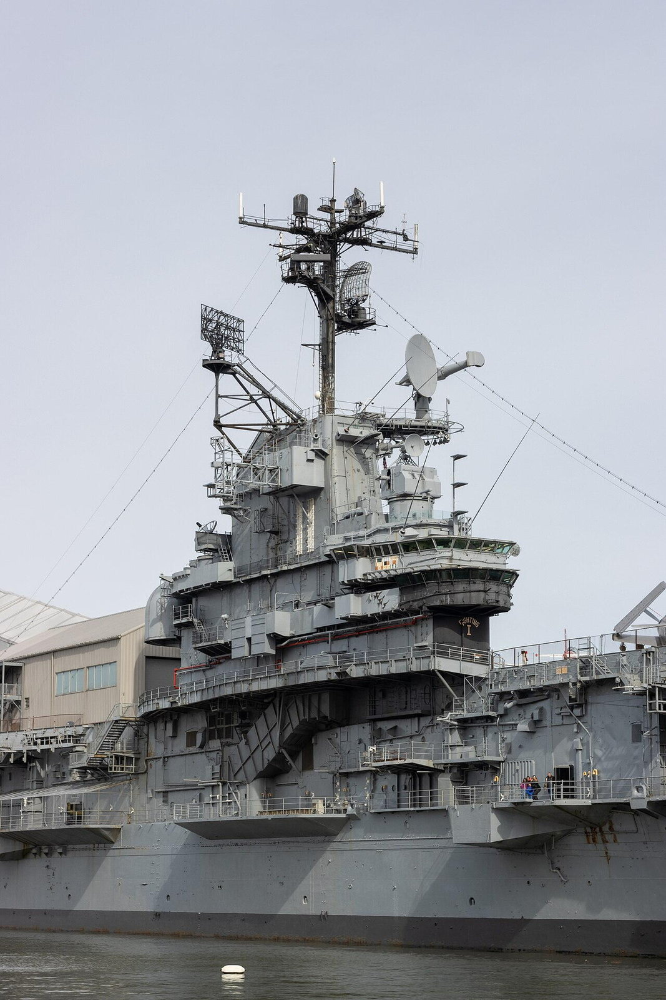
Flight deck holds jets; below decks explore service life; submarine Growler and Space Shuttle Enterprise augment the fleet. Served in World War II, Cold War, and Vietnam before decommission. Towed upriver after a failed Florida home bid; storm Sandy flooded galleries.
Zachary Fisher and veterans championed a floating museum when NYC waterfronts were derelict. Most visited naval museum experience on the Eastern Seaboard.
Upper West Side
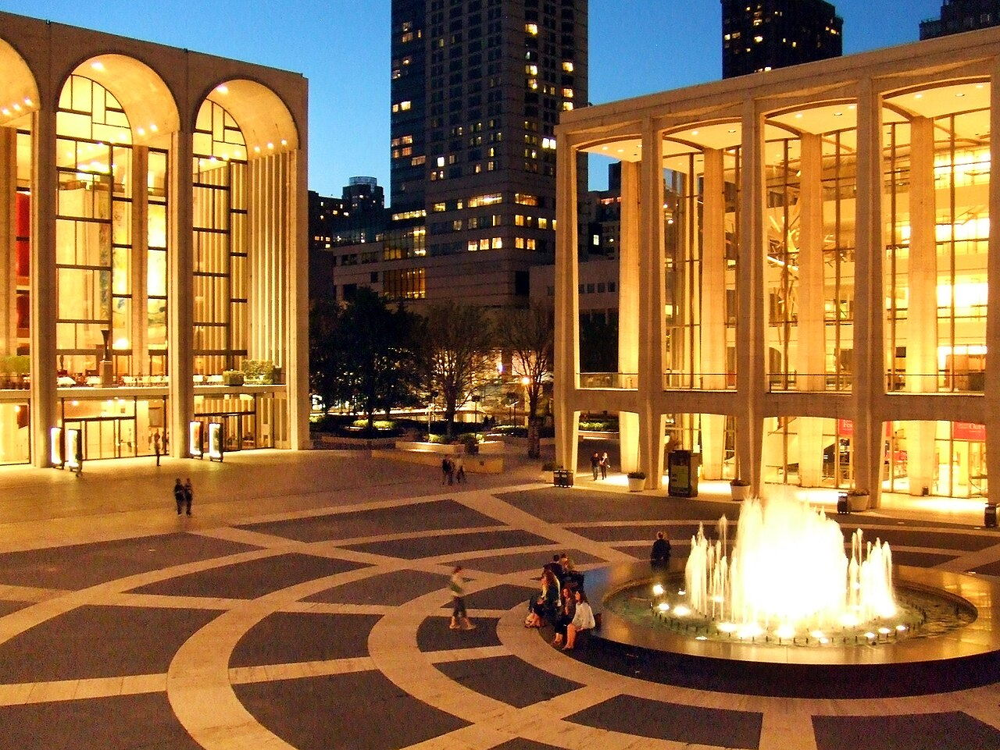
NY Philharmonic, Met Opera, NYCB, Juilliard, and film society share the superblock. Urban renewal cleared San Juan Hill tenements for the complex. Revson Fountain and travertine plazas host free summer events.
Cold War-era bet that high culture needed a purpose-built acropolis. Default brand name for serious music, dance, and opera in America.
World Trade Center site

Names ring each pool; the adjacent museum presents the attacks and aftermath. Water cascades into voids occupying the north and south tower outlines. Survivor tree and plaza inscribe resilience into the site.
Contest-led design after years of debate over rebuilding at Ground Zero. Primary national locus of remembrance for September 11, 2001.
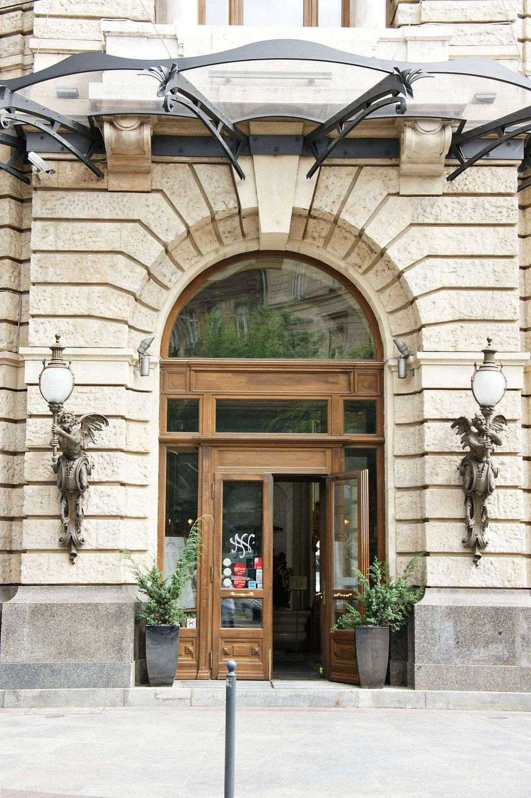
Stephen A. Schwarzman Building

Rose Main Reading Room and Astor Hall host scholars and tourists; lions Patience and Fortitude guard the stairs. Stephen A. Stacks once moved books to readers via conveyor systems.
Merged Astor and Lenox legacies with Tilden trust to create a free public research library. Municipal humanist monument at the edge of Bryant Park.
Lower Manhattan
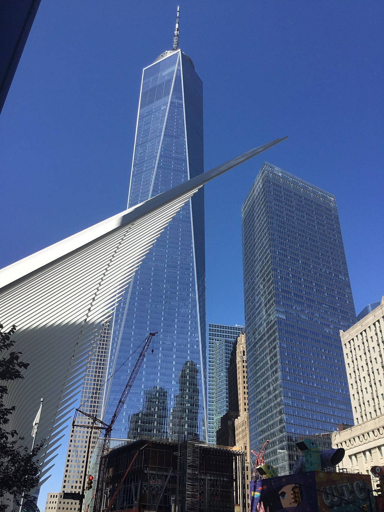
Observation deck Sky Pod looks over harbor, bridges, and the memorial pools below. Symbolic height 1,776 feet references the year of independence. Broadcast and office uses rebuild capacity at the Trade Center campus.
Master-planned after 9/11 with Daniel Libeskind's concept guiding siting and symbolism. New downtown anchor visible from regional skies.
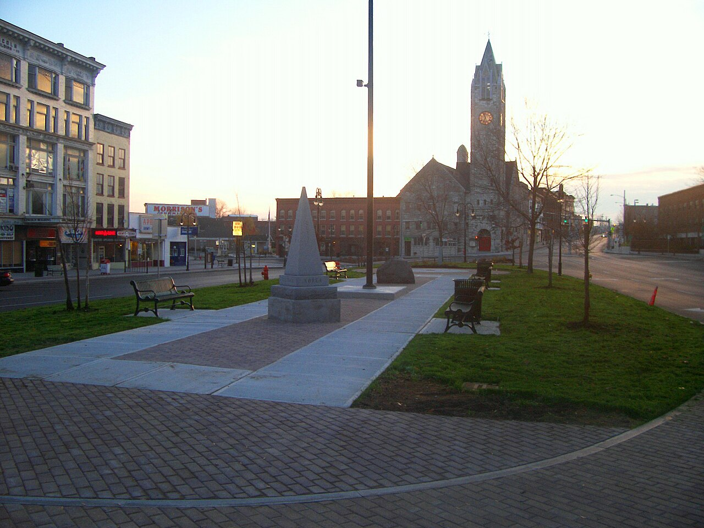
Rockefeller Center
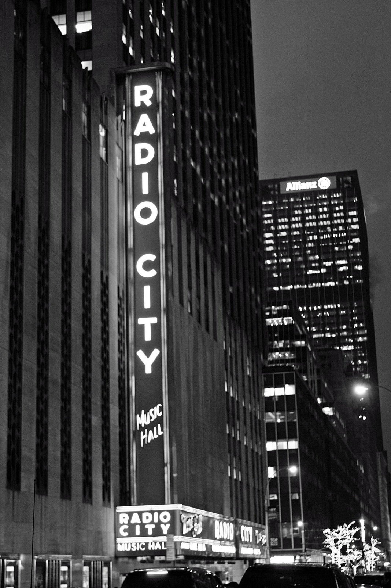
The Rockettes and sprawling stage elevator shows define the Christmas Spectacular. Largest indoor theater of its time; rescued from office conversion 1970s. Mighty Wurlitzer organ remains a showpiece.
Conceived as high-capacity variety palace for Rockefeller's midtown district. Tourism anchor and broadcast venue with intact Deco glamour.
Midtown
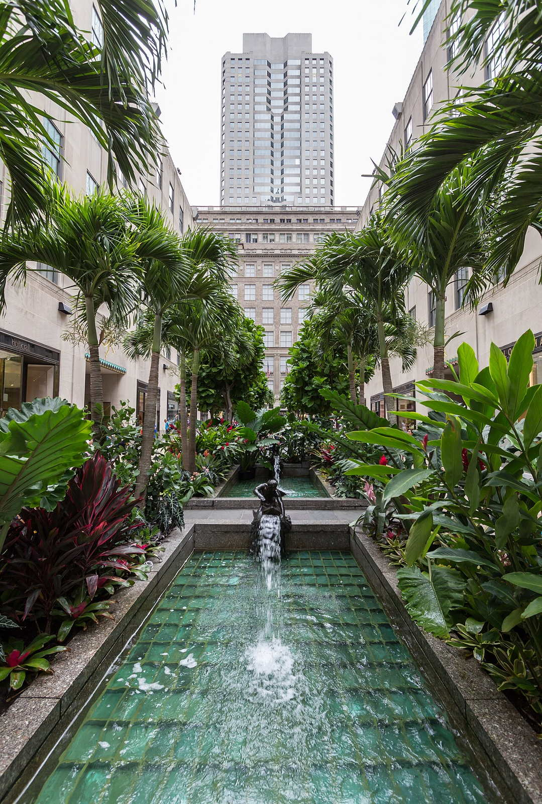
Channel Gardens, ice rink, and Radio City anchor a multi-block privately built precinct. John D. Prometheus fountain and Christmas tree are seasonal icons.
Rose on former hospitals and townhouses as a broadcast and retail city-within-a-city. National Historic Landmark matrix still shaping Midtown ritual and work life.
Upper East Side

The ramp corkscrews around a central atrium; non-objective and modern collections rotate within. Solomon R. Controversial when new for competing with neo-Classical Museum Mile neighbors.
Wright's only New York building opened shortly after his death. UNESCO-listed architecture that changed how museums choreograph viewing.
Fifth Avenue
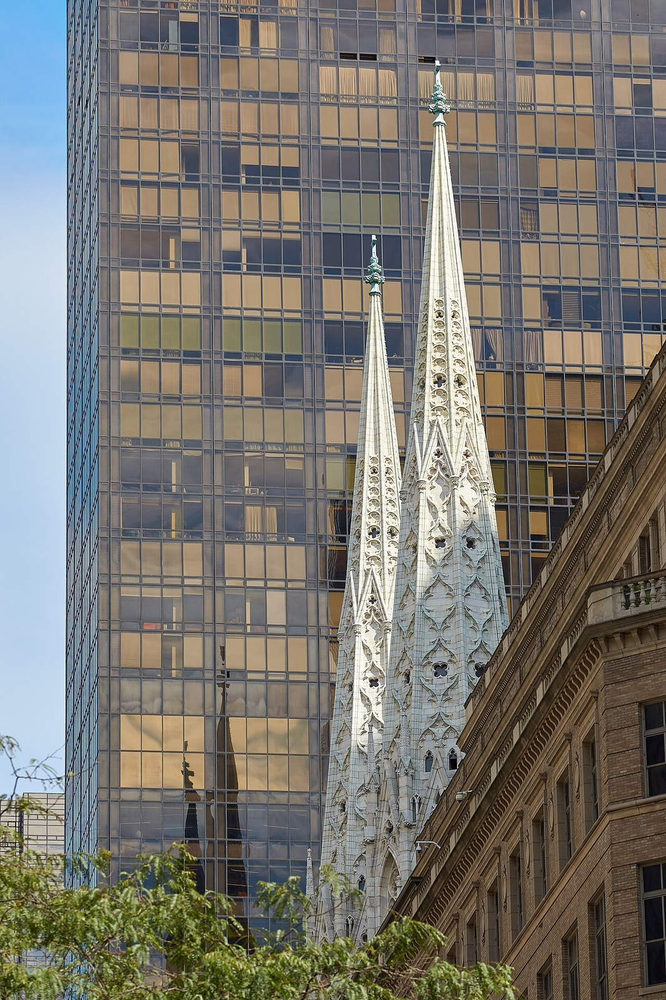
Spires rise above midtown retail; interior restoration refreshed polychrome and shrines. Seat of the Archbishop of New York; major Roman Catholic liturgies. Crypt holds notable archbishops and cardinals.
Built as immigrant Catholicism grew into a metropolitan presence. Spiritual counterweight to the commercial towers of Fifth Avenue.
Liberty Island
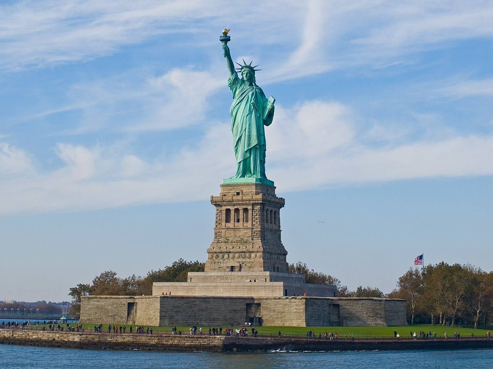
Frédéric Auguste Bartholdi's colossal figure faces the harbor, torch raised. Ferries run from Battery Park and Liberty State Park. Gift from France; tablet shows July 4, 1776 in Roman numerals. Copper sheets oxidized to the familiar green patina over decades.
Conceived in the 1860s–70s as a monument to republican ideals; erected in stages with fundraising on both sides of the Atlantic. International icon of asylum and self-government, seen by generations arriving by sea.
Christopher Street
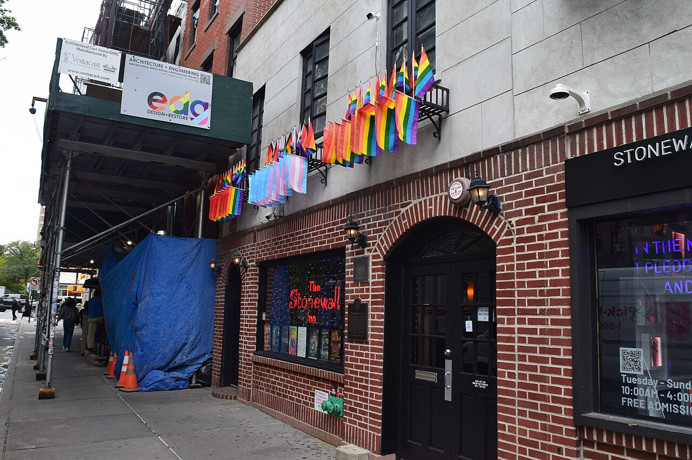
Small park faces the bar where 1969 uprisings catalyzed modern LGBTQ+ politics. First U.S. national monument for LGBT history. Still operating as a bar with pilgrimage traffic.
Mafia-run nightlife met police raids; nights of protest shifted public consciousness. Pilgrimage site equal in many itineraries to older civil-rights landmarks.
Lower East Side
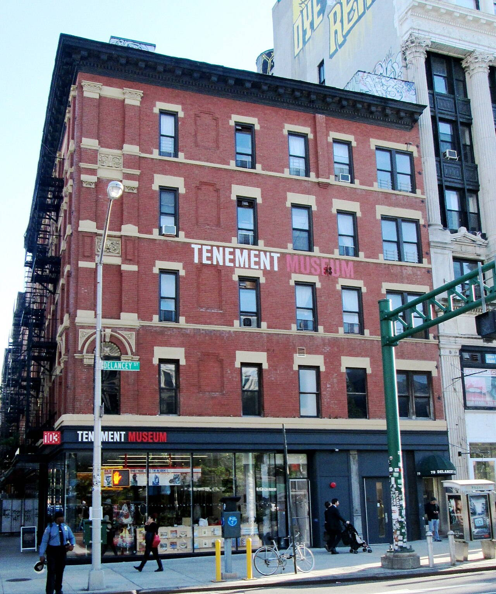
Guided building tours recreate households from German, Jewish, Italian, and later waves. Founder Ruth Abram and historians pieced together oral and archival lives. Premises were sealed mid-century, preserving layers of wallpaper and fixtures.
From overcrowded flats to abandonment, then careful interpretation as social history. Makes concrete how migration built the city's density and politics.
Fifth Avenue
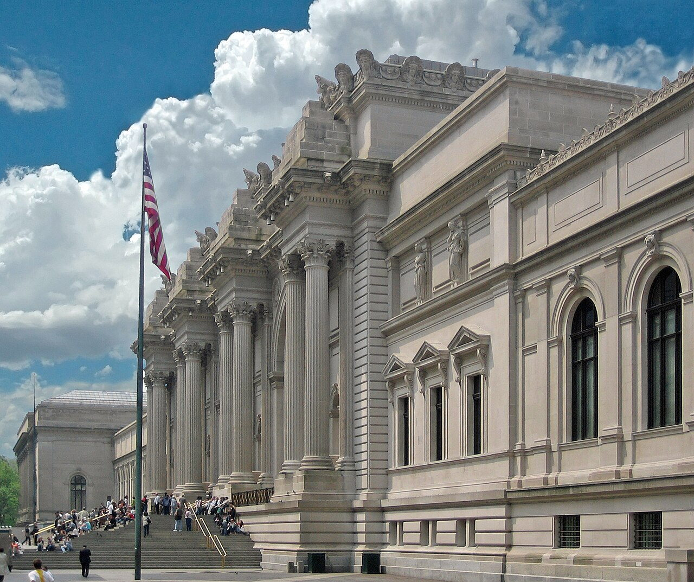
Encyclopedic collections span continents; the Temple of Dendur wing is a signature space. Founded 1870; moved uptown as collections outgrew early sites. The Met Cloisters in Fort Tryon Park holds medieval art.
Grew from civic ambition into one of the world's largest museums, continually adding galleries. Anchor of Museum Mile and a reference museum for global art history.
Hudson Yards

Ambitious climbable landmark; access policies have shifted after safety reviews. Part of the Hudson Yards megaproject over working rail yards. Nicknamed for its ship-like silhouette amid towers.
Conceived as street-level art destination beside The Shed and retail podium. Polarizing emblem of 21st-century luxury development on the West Side.
Broadway and 7th Avenue

Duffy Square's red steps and the bow-tie of intersections pack crowds year-round. Named for The New York Times after it moved its headquarters here. New Year's Eve ball drop began in 1907.
Seedy mid-century decades gave way to corporate-led cleanup and LED spectaculars. Default image of Midtown energy and American popular spectacle.
30 Rockefeller Plaza
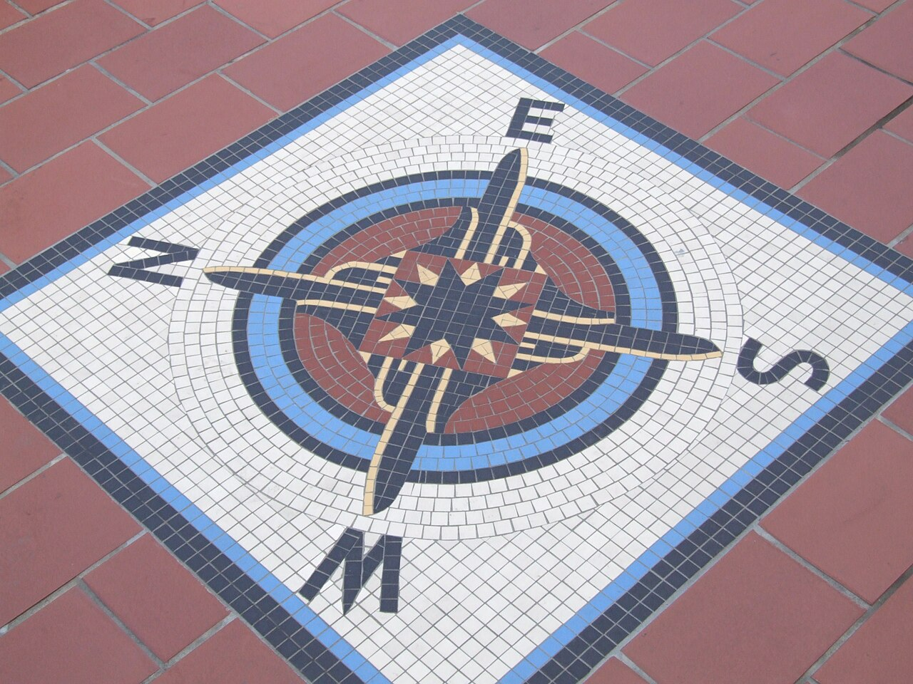
Three levels look toward the Empire State Building and Central Park without cage obstruction. Timed tickets manage crowds versus street-level neighbor buildings. Includes the famous sky mural lobby downstairs in the same complex.
Part of Rockefeller Center's tourism layer after radio and NBC studios matured. Preferred angle for classic Midtown night photography.
Broadway at Wall Street
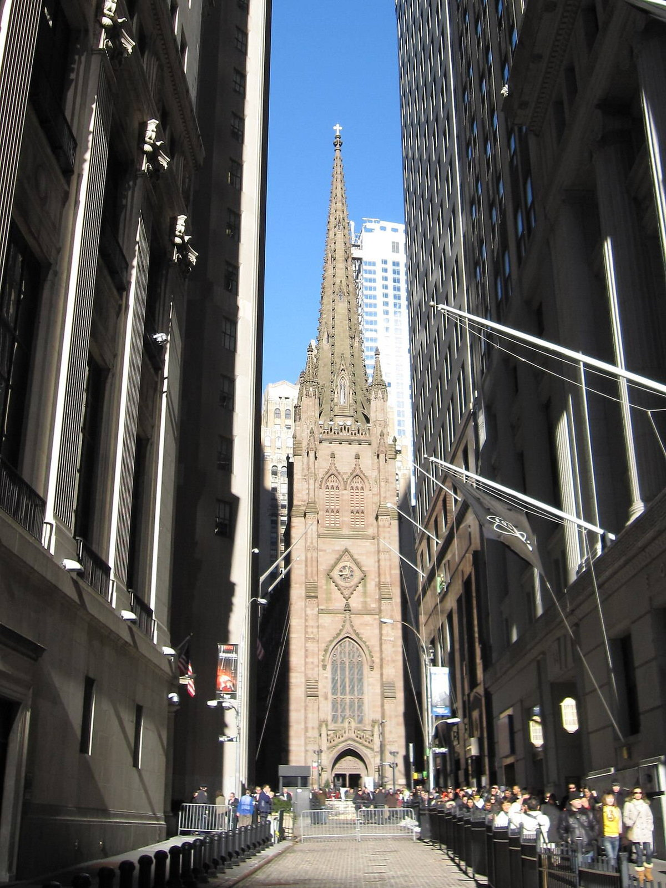
Spire once dominated the skyline; graveyard holds Hamilton and early elites. Wealthy pew rents funded outreach; outreach continues through downtown ministry. The third church on the site after fires and growth.
Episcopal flagship as New York rose from port to financial capital. Liturgical calm amid stock-exchange turbulence.
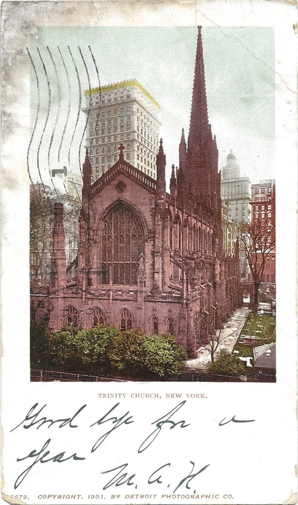
First Avenue
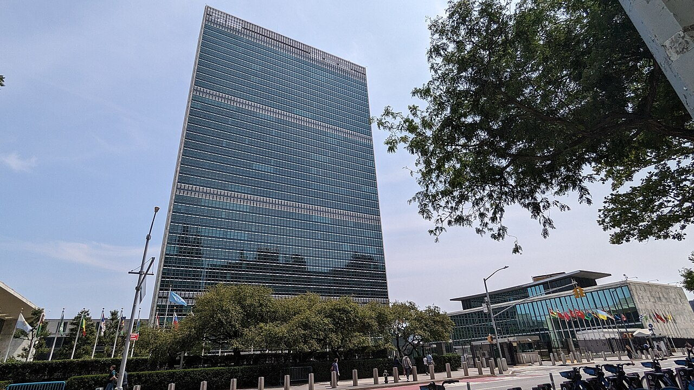
Guided tours pass General Assembly and Council chambers along the East River. John D. Le Corbusier, Oscar Niemeyer, and others debated the tower-and-plaza scheme.
Headquarters moved from successively cramped interim spaces after World War II. Only major UN campus in the United States; symbol of postwar multilateralism.
Greenwich Village

Frames Fifth Avenue vistas; the park is a neighborhood living room. Commemorates George Washington's centennial; reliefs added later. Former potter's field underground still stirs ghost stories.
Evolved from parade decoration to permanent arch as the Village gentrified around it. Village counterculture, street music, and NYU life converge here.
Meatpacking District
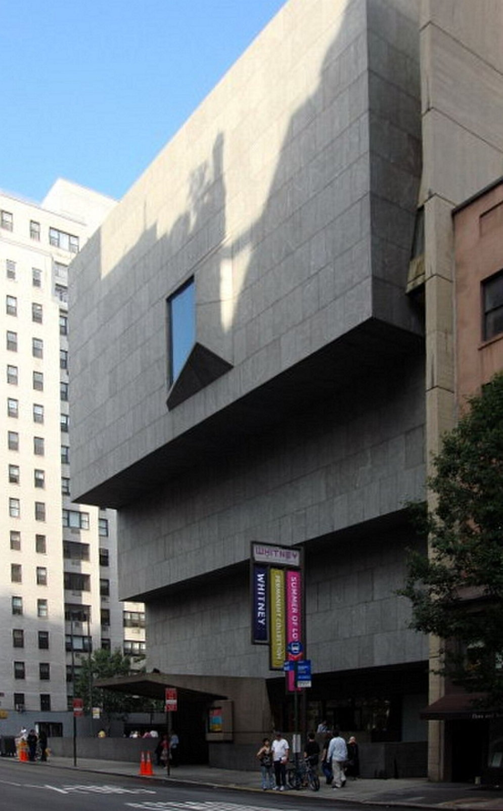
Outdoor terraces stagger down toward the High Line; collection emphasizes American art since 1900. Moved from the Upper East Side Breuer building (now leased to another museum). Biennial exhibitions here steer national art-world conversation.
Gertrude Vanderbilt Whitney's studio collection became a museum opposed to Eurocentric defaults. Flagship institution for living U.S. artists and downtown starchitecture.
The Bronx
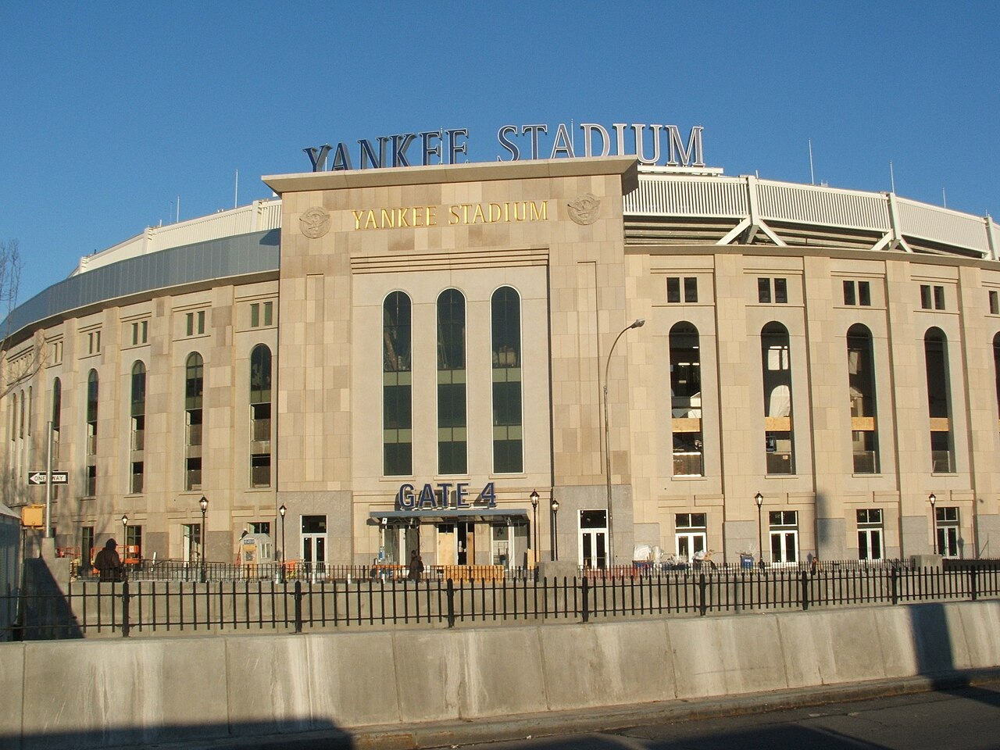
Home of the Yankees; Monument Park honors franchise legends. Replaced the 1976 renovated House That Ruth Built across 161st Street. Hosts soccer and concerts beyond baseball season.
Public financing debates accompanied the move; neighborhood redevelopment followed. Commercial and ritual center of Major League Baseball's most storied franchise.